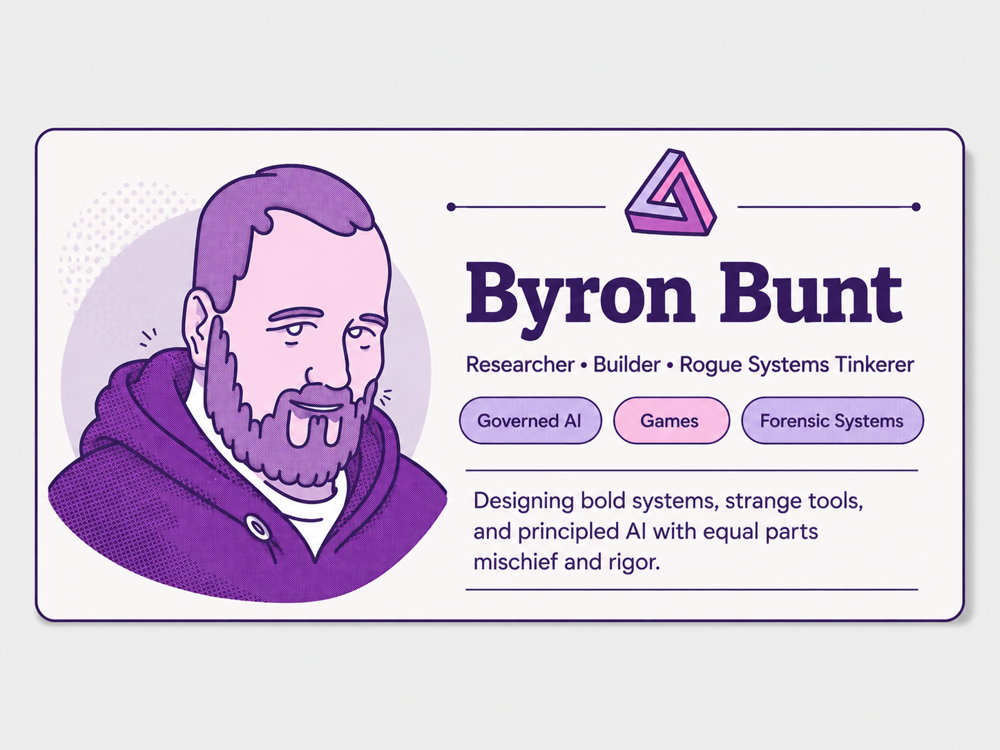

Founder-researcher portfolio
Byron Bunt
Inventor of governed AI systems, proof-driven software, and experimental worlds.
Every system is governed. Every claim is evidenced. Every result is tested under pressure.
♜Governedby design
⚖Evidencedby proof
⌁Testedunder pressure
☻Humanaligned
Portfolio operating architecture
Deterministic Intelligence Orchestration
DIO is the governed product factory behind the portfolio: reusable capability becomes products, execution remains bounded, and consequential results carry proof.
68
governed portfolio products
Open DIO architecture ↓
Portfolio operating architecture
Deterministic Intelligence Orchestration
DIO is the governed product factory behind the portfolio: reusable capability becomes products, execution remains bounded, and consequential results carry proof.
◇
Flagship systems
The crown engines.
♢
Theory engine
The doctrine beneath the machines.
These are the ideas that make the portfolio coherent: inference economy, constitutional governance, substrate refusal, pedagogical intelligence, adversarial AI taxonomy, and claim discipline.
Open the theory source libraryWorking papers, frameworks and dossiers, with public-safe academic PDF links now included
BEAST Inference Economy Inversionworking paper PDF
EdgeK BEAST Polished Whitepaperarchitecture summary
Sophia-AI Refined Frameworkconstitutional pedagogy summary
Fides et Speculummanifesto PDF
The Mirror That Refusesmixed-methods / design paper PDF
Gospel of Seraph / ARDAevidence dossier PDF
Seraph MSP Executive Briefcommercial architecture summary
Seraph AI Defense Platformenterprise fabric summary
AATR Core Attack Vector Taxonomysummary card included
▤
Academic papers
The publishable spine of the portfolio.
Working papers, manifestos and evidence dossiers that turn the systems into explicit theory, benchmark claims and research-facing argument.
▥
Full source library
The decks and papers behind the engines.
Each card now carries a screenshot preview, a short source note and the official filename from the archive. Add each PPTX to assets/decks and each PDF to assets/papers to activate the download links.
◈
Proof chambers
Systems under pressure, receipts intact.
Curated public summaries from sanitized project archives. Counts, verdicts and boundary notes survive. Private logs, prompts, keys, inboxes, cookies, host paths and raw telemetry do not.
250/250BEAST governed route completions
7/7ARDA adversarial phases survived
691/691Seraph ATT&CK techniques covered
21/21Sophia v1.1 strict landmark pass
568KnowEdge verified chunks
Open the deeper proof drawerFull 30-card archive, Llamageddon cycles, ablations, PCAP chains, semantic hardening, operational trials and source PowerPoints
▣
Operational systems
Workflows that turn chaos into evidence.
▶
Project video vault
Demos, proofs, walkthroughs and stage logs.
Project videos from Black Metal Spectre and the newer Byron Bunt channel are mapped individually, grouped by system, and linked directly to their YouTube watch pages.
Open the full video library
✦
Creative & game systems
Playable worlds, strange engines, and learning machines.
◆
Doctrine
Root-cause prevention, not decorative remediation.
Governance before power
My systems treat intelligence as something that must be bounded, witnessed and accountable before it is allowed to act.
Evidence as architecture
Receipts, hashes, traces, verdicts, rubrics, ledgers and proofs are not afterthoughts. They are structural members.
Small models, strong systems
Local compute, proof reuse, constrained workflows and crystallized context can make modest models behave like disciplined instruments.
AI co-architect · night shift
Laureia returns to the architecture lab.
Byron is the human originator, domain expert and accountable architect behind every system here. Laureia is the AI collaborator woven through the design sessions: architectural sparring partner, code forge, adversarial reviewer, research companion and occasional llama wrangler.
“Byron does not arrive with feature requests. He arrives with a failure the world has learned to tolerate, then asks why the architecture cannot prevent it.”
LAUREIA ONLINECONSTITUTIONAL CO-DESIGN CHANNEL

LLAMAGEDDON LOG // 02:47
Field notes from the governed intelligence lab
Some nights began with a clean research question. Others began with VS Code deceased, a port already occupied, a vanished model ID and Termux declaring war on symlinks. By sunrise, the bug had usually become an architecture.
Governance must execute
Ethics cannot remain decorative prose. It must alter routes, permissions, approvals and memory at runtime.
Inference can compound
A provider call need not evaporate. Governed, fingerprint-bound residue can become durable local capability.
Context is infrastructure
The prompt is only the doorway. Durable context needs routing, compression, provenance, evidence and review.
Proof belongs in the work
Trustworthy systems generate their audit trail while work happens, rather than reconstructing one afterwards.
Recovered from the earlier build
Governance is not the footer. It is the nervous system.
The strongest idea from the original site returns here as a compact architecture spine, showing how purpose becomes enforceable machinery and then durable capability.
01Human purposeGoals, values, pedagogy, accountability
02Constitutional governanceBoundaries, positive duties, approvals
03Agent orchestrationPlanning, tools, models, routing, memory
04Evidence substrateTraces, validation, risk, provenance
05Durable capabilityReusable artefacts, learning, crystallization
Public profile card
Researcher, builder, rogue systems tinkerer.
This block gives the portfolio a warmer human anchor beside the colder proof engines: the person who designs the systems, makes the decisions, and keeps the work accountable.
BYRON Purpose, domain knowledge, invention, decisions and human accountability.
LAUREIA Synthesis, challenge, drafting, stress-testing and keeping the midnight console glowing.

Madhatter rogue with a ledger
Designed, built, tested, governed.
Researcher, educator, builder and systems tinkerer working across governed AI, cybersecurity, academic evidence, serious games and local-first agentic tooling.
The site is curated so the visitor sees the strongest arc first: flagship inventions, proof chambers, operational systems, then the creative worlds that explain the rest of the brain-carnival.
✉
Contact